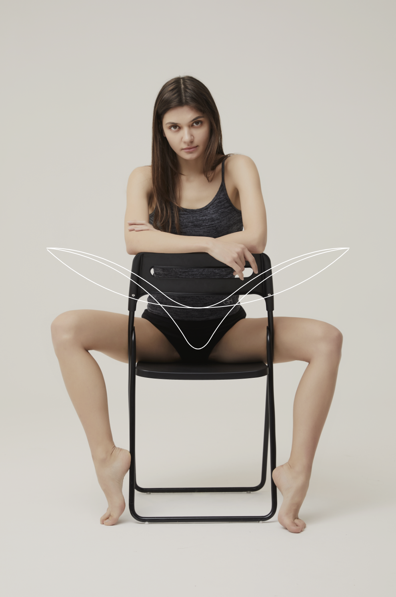
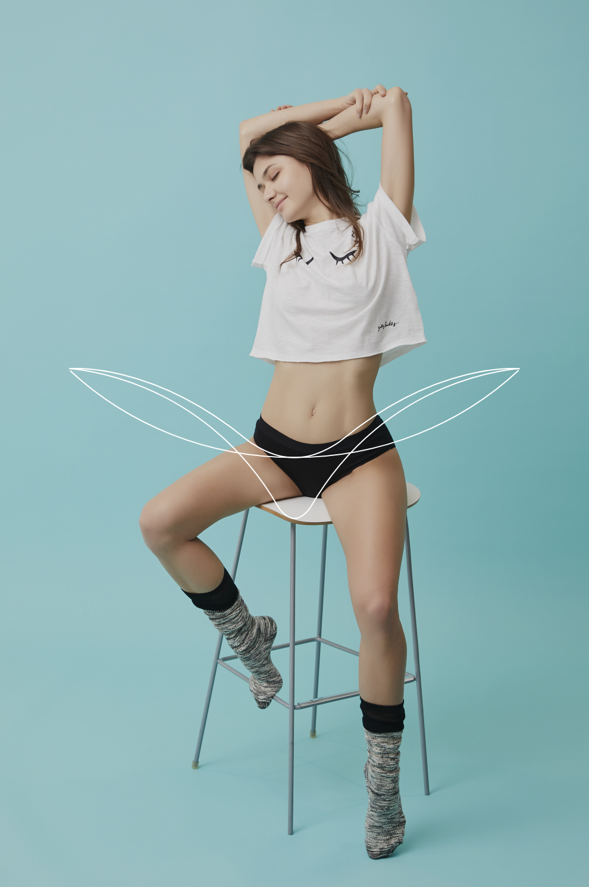
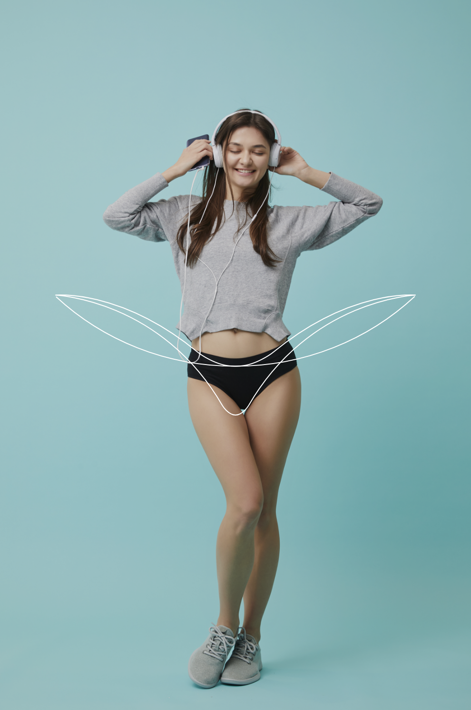

Project 01
Cyclean : 대나무를 소재로 한 유기농 생리팬티 싸이클린 브랜딩 Brand Strategy, Brand eXperience, Concept Design, Logo Design, BI Application, Photograph
Cycle + Clean
싸이클린은 Cycle과 Clean의 합성어로 깨끗하게 재사용된다는 의미의 친환경 유기농 대나무섬유로 만든 생리팬티 브랜드명입니다.
100% Orgarnic
여성이라면 누구나 경험했던 그 날이 되면 항상 축축하고 불쾌하며 냄새로 인해 예민하게 신경써야만했던 경험 또한, 유독 분비물이 많으신 분들은 100% 친환경 소재를 사용함으로써 대나무 성분의 탁월한 흡수력으로 더 이상의 불쾌감과 냄새로부터 예민해 질 필요가 없습니다 특히, 생리통이 심하셨던 분들께서는 반듯이 친환경 소재의 생리팬티 싸이클린의 새로운 경험을 강추합니다.
Period Underware
싸이클린은 친환경 유기농 대나무 섬유로 만든 생리팬티입니다. 그날의 트러블로 힘들었던 의류디자이너가 장기간 연구 개발된 생리팬티로 세척을 통한 재사용이 가능합니다.



